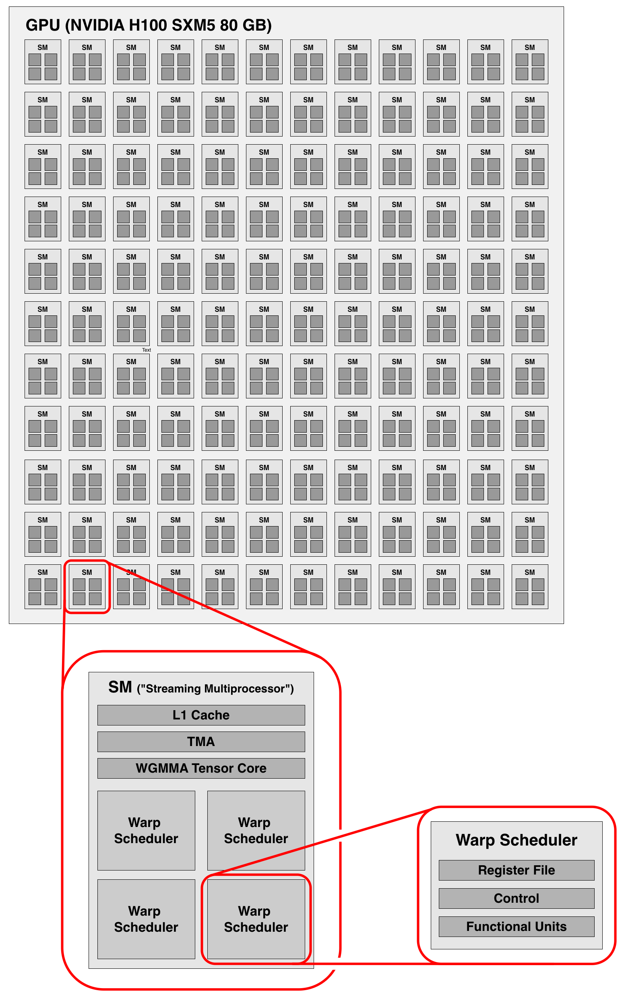
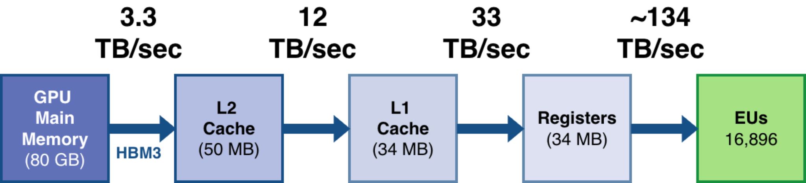
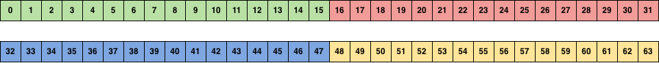

Lab 9: Bring Your Own Warp Scheduler
Prologue: Logistics
Pair Programming
For this lab and the remaining labs in the course, you’ll be working in teams of two. You’re free to choose your own partner, and we encourage you to find someone whose schedule and working style aligns well with yours.
Due Dates
For this lab, you’ll be turning in the following deliverables:
-
Checkpoint: Due Monday, November 3, 11:59 pm. On Gradescope, let us know if run into any issues with the H100 Telerun infrastructure, submit your responses to the prelab questions (Part 0) with the completed code, and give us a brief update on your progress with the rest of the lab.
-
Final Submission: Due Wednesday, November 12, 11:59 pm. Submit your completed code for all parts of the lab, as well as a PDF writeup containing your answers to Questions 1-3. Note that this is a longer timeline than usual (a week and a half!).
Starter Code
You can get the starter code for this lab by cloning the lab repository:
git clone git@github.com:accelerated-computing-class/lab9.git
Hello, H100!
We’ve spent a lot of time with our RTX 4000 Ada, optimizing the Mandelbrot function (Lab 1, Lab 2), wave simulations (Lab 3), matrix multiplication kernels (Lab 4, Lab 5, Lab 6), and more irregular access patterns (Lab 7, Lab 8). Along the way, you have learned about memory coalescing, shared memory bank conflicts, asynchronous operations, coarse-grained operations like tensor core instructions, and warp-level primitives. By now, you’re familiar with most of what the Ada architecture has to offer.
With that foundation in place, it’s time to turn our attention to the NVIDIA H100 SXM5 GPU.
The H100 builds on many of the same fundamental ideas we’ve seen, but the end result is is different from our RTX 4000 Ada in many ways, both in its compute and memory hierarchy:
-
With 132 SMs, the H100 SXM5 has nearly 3x the streaming multiprocessors compared to the Ada’s 48 SMs.
-
The DRAM is now 80 GB of HBM3 with 3.3 TB/s of memory bandwidth. Over the 360 GB/s bandwidth on the Ada, this is an appreciable 9.1x increase in DRAM bandwidth.
-
The L2 cache has grown to 50 MB with 12 TB/s of memory bandwidth. On the Ada, the L2 cache was 48 MB with a bandwidth of about 2.4 TB/s.
-
There is 256 KB of SRAM-per-SM with a bandwidth of 33 TB/s, compared to 13.4 TB/s on the Ada.
-
Like before, the SRAM-per-SM can be partitioned into shared memory and the L1 cache. A maximum of 227 KB is available for shared memory, a 78% increase over the existing 128 KB on the Ada.
-
Each warp scheduler has 64 KB of SRAM used as register file storage, same as the Ada.

H100 architecture, based on the description by NVIDIA

Beyond the quantitative differences in compute resources and memory capacity, the H100 introduces two new features: the Tensor Memory Accelerator and warp group-level matrix multiply instructions.
The first feature, the Tensor Memory Accelerator (TMA), is an asynchronous
hardware copy engine that builds on the same principle of overlapping memory
movement with other useful work that we explored in Lab 5 and Lecture 5.
However, unlike the cp.async instructions from Lab 5 that
operate on small chunks of up to 16 contiguous bytes, TMA operates at tile granularity,
allowing you to transfer entire multidimensional tiles (up to 5D, and up to 256 elements on a side) between global
and shared memory in a single operation. It is a coprocessor that runs
alongside the main processor: a single lane issues a TMA operation by
providing a descriptor that specifies the data’s dimensions and layout , and from
that point on, the TMA engine handles all data movement independently without
consuming any more registers or instruction issue slots. That is, once the TMA
instruction is issued, the TMA engine automates address computation,
handling all the strided offsets and multidimensional indexing in hardware.
The second feature, the warp group-level matrix multiply (wgmma)
instruction, extends the tensor core instructions we used in Lab
6. In Lab 6, the tensor core instructions (mma) operated on a
single warp (32 lanes), allowing us to compute small matrix tiles in
a single instruction. The wgmma instruction scales this up to operate on a
warp group — 4 warps working together for a total of 128 lanes. This allows
even larger matrix tiles to be computed in a single coarse-grained operation,
improving data reuse. Moreover, unlike the mma instruction, wgmma is
asynchronous, enabling the warp group to issue the matrix multiply and
immediately continue with other work while the computation completes in the
background.
Prelab Question 0: Run
hello-h100.cuusing the new telerun infrastructure:uvx telerun submit hello-h100.cuIf you have not used
uvxto run telerun before, take a look at the Piazza post here.(Note: you may see comments like
// TL+ {"platform": "h100"},// TL+ {"compile_flags": ["-lcuda"]}, etc. at the top of the file. These comments tell telerun which machine to run on, whether to include any headers, or add any compiler flags. You should not need to change these comments)Check the output to verify that your code ran on an H100. Were you able to successfully run code on the H100? If you encountered any issues, please describe them.
During this lab and the next, we’ll learn how to use the TMA and wgmma
to build a fast matrix multiplication kernel for the H100.
Goals for This Lab
The focus of this lab is to get comfortable with the H100 and understand how to use the TMA to overlap computation and memory movement. By the end, we’ll have implemented a software pipeline that coordinates multiple warps to hide memory latency, essentially building our own warp scheduler in software.
This lab has six parts:
-
Part 0 (Prelab) introduces the interface for moving data from global to shared memory using the TMA, implementing a 1 block, 1 lane, 1 tile TMA load using staff-provided interfaces. This involves learning how to use split barriers, which are crucial for coordinating TMA operations.
-
Part 1 covers moving data from shared to global memory. This will require you to learn the commit group completion mechanism that TMA uses for shared-to-global transfers.
-
Part 2 asks you to design a TMA reduce interface and use it to perform a reduction while moving data from global to shared memory.
-
Part 3 involves writing a TMA-based
memcpykernel that achieves peak memory bandwidth on the H100. -
Part 4 is the main challenge: implementing your own warp scheduler using the TMA engine. Here, the constraint is that only one block can be active per SM, which means all parallelism must come from coordinating multiple warps within that block. To maintain high throughput, you’ll need to carefully orchestrate how these warps overlap their work.
-
Part 5 serves as a transition to the next lab, and explores swizzling patterns for shared memory layouts. These patterns help avoid shared memory bank conflicts, and understanding them will be crucial for the next lab on
wgmma.
Part 0: Single-Block, Single-Lane, Single-Tile TMA Load
As mentioned earlier, TMA is a hardware copy engine, or coprocessor that asynchronously moves data at tile granularity. Using the TMA has five key benefits:
-
TMA can help overlap memory and compute. TMA loads and stores are asynchronous, meaning that once a TMA operation is issued, the TMA engine handles the data transfer independently while the issuing lane can continue with other work.
-
TMA can free up instruction issue slots. By operating on entire tiles at once, TMA automates the address computation for elements in the tile. This means that you no longer need to perform index arithmetic to compute offsets into arrays.
-
TMA can reduce register pressure. As you no longer need to compute individual strides and offsets into your array, you no longer need to store them in registers.
-
TMA can eliminate the need for manual bounds checking. It can automatically handle accesses to memory outside the tensor bounds by filling out-of-bounds elements with either zero or a special NaN value.
-
TMA can load data in with swizzled formats. That is, it can automatically arrange data in shared memory using specific permutations to avoid bank conflicts, eliminating the need for manual rearrangement.
Since the TMA engine is a separate coprocessor, we will need to program it using special instructions that the coprocessor can understand. To do so, we will first need to understand what kinds of instructions it can support.
The TMA engine can be programmed using four types of instructions:
-
The TMA engine can load data from global memory to shared memory.
-
The TMA engine can store data from shared memory to global memory.
-
The TMA engine can reduce data from shared memory to global memory, performing an element-wise reduction operation (like
+or-) with the data already present in global memory. -
The TMA engine can multicast data from global memory to shared memory across multiple blocks executing on different SMs.
For this part of the lab, we’ll focus on loading data from global memory into shared memory. In particular, we’ll launch a kernel with a single block and a single lane, where the goal is to successfully move a single tile from global memory into shared memory using a TMA load instruction, and then store the result back into another location in global memory using regular CUDA.
Setting up a Tensor for TMA Load
To move tiles of data, the TMA engine needs to be able to answer a few questions about our data: Where is it in memory? How is it laid out? What tile size should each transfer use?
We provide this information through a tensor descriptor. The tensor descriptor tells the TMA engine how our data is laid out in memory, and at what granularity we would like to load it. Unlike most CUDA operations that are configured entirely on the device, the tensor descriptor setup happens on the host. We create a descriptor on the CPU side that describes the structure of our tensor, and then pass this descriptor to the kernel where it can be used to initiate TMA operations.
To prepare an array for TMA transactions, you’ll need to use the
cuTensorMapEncodeTiled
function from the CUDA Driver API. This function creates a CUtensorMap object
that encodes the information TMA needs to know about your tensor’s layout
and how you want to access it in tiles.
CUresult cuTensorMapEncodeTiled (
CUtensorMap* tensorMap,
CUtensorMapDataType tensorDataType,
cuuint32_t tensorRank,
void* globalAddress,
const cuuint64_t* globalDim,
const cuuint64_t* globalStrides,
const cuuint32_t* boxDim,
const cuuint32_t* elementStrides,
CUtensorMapInterleave interleave,
CUtensorMapSwizzle swizzle,
CUtensorMapL2promotion l2Promotion,
CUtensorMapFloatOOBfill oobFill )
Setting up a tensor map requires specifying six key parameters that you will use in this part, which describe the tensor’s structure and how to break it into tiles:
-
tensorDataType— The underlying datatype of the tensor. For this lab, we will be operating onbf16. -
tensorRank— The number of dimensions in your tensor. A 1D array has rank 1, a 2D matrix has rank 2, a 3D volume has rank 3, and so on. -
globalDim— An array that describes the full size of your tensor in each dimension. For a 2-dimensional, row-major matrix, this would be{2048, 1024}. Please note thatglobalDimorders the dimensions from fastest to slowest moving. -
globalStrides— An array of sizetensorRank - 1that describes how memory is laid out in global memory (in the same order asglobalDim).Specifically, how many bytes you skip to move one step along each dimension. For a row-major 2D array of floats (4 bytes each) of dimension columns, moving to the next row requires skipping bytes, so the stride would be{8192}. Note that this array has sizetensorRank - 1because TMA assumes the fastest-moving dimension (the first dimension inglobalDim) has a stride of 1 element, meaning elements are contiguous in memory. -
boxDim— An array that specifies the tile size, or how many elements to transfer along each dimension in a single TMA operation, specified in the same order asglobalDim. For example,{16, 16}means you’re loading 16×16 tiles at a time. Importantly, each dimension of theboxDimarray must be less than or equal to 256, and there are stricter size constraints depending on the other parameters that you choose. For this lab, (where we will not worry about theinterleaveparameter), these dimensions must 16 byte-aligned. -
elementStrides— An array that specifies the stride pattern in shared memory for the loaded elements in each dimension, measured in elements (not bytes). Confusingly, this means something completely different fromglobalStrides! Generally, this is all 1s (meaning consecutive placement), but you could set it to{2, 1}to place elements with a stride of 2 elements in the first dimension in shared memory, creating gaps between elements.
The cuTensorMapEncodeTiled function also takes several other parameters (like
interleave, swizzle, l2Promotion, and oobFill) that control features like
shared memory layout optimization and cache behavior. For now, we’ll use the folllowing
values for these fields:
interleaveshould be set toCU_TENSOR_MAP_INTERLEAVE_NONEswizzleshould be set toCU_TENSOR_MAP_SWIZZLE_NONEl2Promotionshould be set toCU_TENSOR_MAP_L2_PROMOTION_NONEoobFillshould be set toCU_TENSOR_MAP_FLOAT_OOB_FILL_NONE
Note: The oobFill parameter is worth mentioning since it highlights a
benefit of using the TMA. When a TMA operation attempts to access memory outside
the bounds of your tensor, TMA can automatically handle this by filling
out-of-bounds elements with either zero or a special NaN value, eliminating the
need for manual bounds checking in your kernel.
Suggested Check-in: Try setting up the
CUtensorMapfor the tensor in the starter code. Even though you are not actually using it in a complete kernel yet, it’s helpful to check whether CUDA raises any errors. It’s easy to set up incorrect descriptors, and catching errors early will save debugging time later. You may find it usefull to refer tocuTensorMapEncodeTiled’s documentation. Don’t forget to callcuda_checkon your setup to actually test whether it is valid.
Now that we the tensor descriptor, let’s look at the interface for the load
function provided in 0-tma-single-load.cu to see how to actually pass it in:
__global__ void
The tensor map you set up using cuTensorMapEncodeTiled is of type
CUtensorMap, and you can pass it directly to your GPU global kernel. You may
notice the
__grid_constant__
qualifier. In general, this qualifier indicates that a parameter is is “constant
for the entire grid”. When passing a CUtensorMap, you must mark
it
as a const __grid_constant__ parameter.
After setting up the tensor map on the host and calling the kernel with the
tensor map passed in, we can begin issuing TMA load operations from within the
kernel. The specific TMA instruction you use depends on the dimensionality of
the tensor. There are different instructions for 1D, 2D, 3D tensors, and so on,
matching the tensorRank you specified when creating the tensor map.
When you issue a TMA load instruction, you will need to pass the tensor descriptor to the TMA co-processor along with the coordinates of the tile you want to load. Using the information embedded in the tensor descriptor, and the coordinates you want to load, the TMA engine can figure how much data to load and where the data lives.
Before we dive into the TMA instructions themselves, we need to address a critical question: since TMA operations are asynchronous, how do we know when a TMA transfer has finished? This is where split barriers come in.
Synchronizing TMA global-to-shared transfers
To synchronize TMA transfers for global-to-shared loads, we will need to use
split barriers (also called mbarriers in CUDA). Before exploring how split
barriers work with the TMA, it’s helpful to understand what makes them different
from __syncthreads(), the synchronization primitive we’ve used the most so
far.
Traditional synchronization points like __syncthreads() and __syncwarp() are
what we might call join barriers: they combine arrival and waiting into a
single atomic operation. When you call __syncthreads(), every thread both
announces its arrival and waits for all other threads to arrive before
continuing. The set of participating threads is encoded in the instruction
itself and cannot be changed at runtime.
A split barrier, in contrast, decouples the
concepts of arrival and waiting. With an
mbarrier, lanes can arrive at the barrier at one point in the program and
wait for completion at a different point, potentially doing useful work in
between. Moreover, you can configure at runtime how many arrivals are
needed for the barrier to complete, giving you the flexibility to synchronize an
arbitrary subset of lanes.

CUDA provides split barriers through the mbarrier primitive. At its core, an
mbarrier is a counter-based synchronization mechanism. When you initialize an
mbarrier, you specify an arrival count — the number of lanes that must
“check in” before the barrier releases. As each lane completes its work and
arrives at the barrier, the counter increments. Once the arrival count is
reached, any lanes waiting on the barrier are released and can proceed with
their next phase of work.
This basic arrival-counting mechanism is useful on its own, but mbarriers have
an additional capability specifically designed for TMA operations: they can
track bytes arriving via asynchronous transfers.
When coordinating with TMA, you first tell the mbarrier how many bytes to
expect via an asynchronous transfer. Then, when you issue a TMA operation, you
attach it to the mbarrier. The barrier then tracks both conditions
simultaneously:
- How many lanes have arrived at the barrier?
- How many bytes have been transferred by TMA?
The barrier will only release waiting lanes once both conditions are
satisfied. This dual-tracking capability is what makes mbarriers especially
useful for TMA synchronization. Split barriers can ensure that lanes don’t
proceed to use data until it has actually arrived in shared memory, while still
allowing the flexibility to have different subsets of lanes coordinate on
different transfers.
Alongside the lab writeup, we have also released a guide that explains the interfaces provided as part of this lab, and how they map to the general concepts introduced in this section. At this point, we recommend you read the guide to understand how to initialize mbarriers, coordinate their arrivals, and use them to track TMA completion:
>>> TMA Interface Reference <<<
Deliverable, Prelab: Using the staff-provided interfaces, implement a single block, single lane, single tile TMA transfer from global memory to shared memory in
0-tma-single-load.cu. After the data has been loaded into shared memory, store the tile back into a global array (you are allowed to use normal CUDA for stores). Note: For this part of the lab, you should not need to worry about phases (explained in the Interface Reference).
Part 1: Single-Block, Single-Lane, Single-Tile TMA Store
In Part 0, you learned how to use TMA to load data from global memory into
shared memory, using split barriers (mbarriers) to track when the asynchronous
transfer completes. Now it’s time to look at the other direction: storing data
from shared memory back to global memory using TMA.
At first glance, you might expect TMA stores to work equivalently to TMA loads. As it turns out, TMA stores use a completely different completion tracking mechanism than TMA loads. While loads rely on split barriers to signal when data has arrived in shared memory, stores use commit groups to track when data has been successfully written out to global memory. You may remember this mechanism from Lab 5, where we first used it for asynchronous operations. You can refer back to Lab 5 and read the documentation provided in TMA Interface Reference to understand commit groups in more detail.
A natural question you may have is why the difference in completion mechanisms?
For loads, the mbarrier lives in shared memory alongside the destination data,
so the TMA engine can easily update the barrier as data arrives. For stores,
however, the hardware would need to propagate completion information from global
memory back to the mbarrier in shared memory, resulting in a “round-trip”
through the memory hierarchy that is difficult to implement efficiently in
hardware. Therefore, stores use a different, non-mbarrier based completion
mechanism.
Deliverable: In
1-tma-single-store.cu, replace the hand-written store from Part 0 with TMA store instructions. You’ll need to set up aCUtensorMapfor thedstarray.
Part 2: Single-Block, Single-Lane, Single-Tile TMA Reduce
So far, you’ve used TMA to move data between global and shared memory. But TMA can do more than just copy data. It also supports reduction operations that combine data movement with computation.
TMA reduce operations work like TMA stores, but instead of simply writing values
from shared memory to global memory, they perform a reduction
between the values being written and the values already present in global
memory. For example, a TMA reduce with the min operation will compute the
elementwise minimum between the tile in shared memory and the corresponding tile
in global memory, storing the result back to global memory. By using TMA reduce
to atomically update global memory with the combined result in a single
operation, and can eliminate a pass over the data.
Writing Your Own TMA Interface
In Parts 0 and 1, you used staff-provided interfaces to issue TMA operations.
For this part, you’ll write your own TMA reduce interface for the add
operation using inline PTX assembly. We’ve provided a function skeleton called
cp_async_reduce_add_bulk_tensor_2d_shared_to_global that you’ll need to fill in with
the appropriate inline assembly instruction.
The PTX will look similar to the TMA store instructions you’ve seen before, but you will need to find and use the correct reduction instruction variant from this section of the PTX docs.
Deliverable. In the provided starter code, implement the
cp_async_reduce_add_bulk_tensor_2d_shared_to_globalfunction using inline PTX assembly to perform a TMA reduce with theaddoperation. Then, write a simple kernel in2-tma-single-reduce.cuthat uses this function to reduce a tile from shared memory to global memory. Like Parts 0 and 1, this should be a single-block, single-lane, single-tile kernel, so you should be able to reuse most of your setup code from the previous parts.
Part 3: A TMA-only memcpy Kernel
Now that you’re comfortable with TMA operations, it’s time to put this knowledge to the test by implementing a practical kernel that achieves high memory bandwidth.
In the introduction, we mentioned that the H100’s DRAM bandwidth
is around 3.3 TB/s. In memcpy.cu, we’ve provided a baseline memcpy kernel that
uses standard coalesced vector loads to achieve around 2.1 TB/s of
bandwidth. Your task is to implement a TMA-based memcpy kernel that matches or
exceeds this performance.
Unlike Parts 0 through 2, where you worked with a single block and a single lane, achieving high bandwidth requires you to saturate the entire GPU. This means you’ll need to launch multiple blocks and have each block process multiple tiles. To handle multiple tiles per block, you’ll need to carefully manage the phase bit in your split barriers, tracking which phase each barrier is in as you iterate through tiles.
Some things to consider as you implement your kernel:
-
Tile granularity. What size should each TMA transfer be? Larger tiles mean fewer TMA operations, but require more shared memory per block.
-
Shared memory allocation. How much shared memory should each block allocate? Do you need to double-buffer to overlap loads and stores?
-
Phase management. When do you need to flip the phase bit? How do you track which phase each barrier is in?
-
Lane utilization. How many lanes are actually doing useful work in your kernel? Remember that TMA operations only need a single lane to issue them.
Deliverable. In
3-tma-memcpy.cu, implement a TMA-basedmemcpykernel that achieves at least 2.1 TB/s of bandwidth, matching or exceeding the baseline kernel.
Question 1 for final write-up. What bandwidth were you able to achieve with your TMA
tma_copykernel? How did you approach phase bit management? What tile size did you choose and why? How much shared memory did you allocate per block? How many threads were actually doing useful work in your kernel?
Part 4: Building Your Own Warp Scheduler
Throughout the course, we’ve emphasized that one of the primary ways to hide memory latency on GPUs is by oversubscribing the warp schedulers. By launching multiple blocks per SM, the hardware can switch between warps to do useful work when one stalls on an operation. For example, in your matrix multiplication kernels from Lab 4 through Lab 6, you had to carefully manage shared memory usage per block to maximize occupancy, ensuring that multiple blocks could run concurrently on each SM.
In Part 3, you likely relied on this same principle. By launching multiple blocks, the hardware scheduler could automatically hide latency by switching between warps from different blocks whenever memory operations stalled.
For this part, you’ll work under a new constraint. You must launch kernels where each block uses the maximum shared memory available on the H100 (227 KB per block). With this much shared memory per block, you can only fit one block per SM. This means the hardware can no longer hide latency by switching between blocks. Instead, all parallelism must come from coordinating multiple warps within a single block.
In essence, you’re building your own warp scheduler in software. You need to orchestrate how different warps within the block overlap their memory operations, manually implementing the kind of latency hiding that the hardware scheduler would normally handle automatically when multiple blocks are active.
Deliverable. Implement the
tma_multiwarp_pipelinekernel in4-warp-scheduler.cuthat uses the full 227 KB of shared memory per block and achieving at least 2.4 TB/s of bandwidth through software-managed warp coordination.
Question 2 for final write-up. How many warps did you have active per block? How did you partition work between them? How many barriers did you allocate in shared memory, and how did you manage phase bits across different warps? What performance did you achieve compared to a version that doesn’t use the full shared memory capacity?
Suggestion for Part 4: The Producer-Consumer Pattern
One effective strategy for this kind of coordination is a producer-consumer pattern. You can have one or more “producer” warps that issue TMA loads to bring data into shared memory, while “consumer” warps process that data and issue TMA stores to write results back. By carefully coordinating these warps with split barriers, you can overlap the producers’ memory operations with the consumers’ storage.
However, this coordination is more complex than it might first appear. Each warp may be working on different tiles at different points in time, which means they’ll be in different phases of their respective pipelines. You’ll need to think carefully about how to partition shared memory between warps, how many barriers you need to allocate, and how to track phase bits for each warp’s independent progress through the data.
Some things to consider as you design your warp scheduler:
-
Shared memory partitioning. How will you divide the 227 KB of shared memory between different warps?
-
Barrier allocation. How many split barriers do you need?
-
Phase bit management. How do you track phase bits when different warps may be at different stages of the pipeline?
-
Work distribution. How many warps should be producers versus consumers? What’s the optimal ratio?
This strategy of assigning different roles to different warps within a block is known as warp specialization. We first introduced this pattern in Lab 5, where you overlapped compute with data movement using asynchronous copies.
Part 5: Understanding Swizzling Patterns
You’ve now built up substantial experience with TMA, from simple single-tile transfers to coordinating complex multi-warp pipelines. Before we wrap up, there’s one more TMA feature worth exploring that will be crucial for the next lab.
Swizzling for Bank Conflict Avoidance
In Lab 4, shared memory bank conflicts were a persistent performance concern while implementing a fast matrix multiplication kernel. When multiple lanes in a warp tried to access different addresses that map to the same memory bank, those accesses were be serialized, reducing effective bandwidth. You may have worked around this by transposing data or adding padding to your shared memory layouts.
It turns out that avoiding bank conflicts through careful memory layout is such a common requirement that TMA provides hardware support for it. When you set up a tensor map, you can specify a swizzle pattern that automatically permutes how data is stored in shared memory. This can eliminate bank conflicts without requiring you to manually restructure your data or add padding.
Reverse-Engineering TMA Swizzle Patterns
Rather than trying to decode the swizzle patterns from the PTX documentation, we’ll take a more hands-on approach (in fact, the swizzle PTX documentation was even incorrect for a while!). In this part, we will try to figure out the actual behavior of the hardware by observing how it behaves in parctice.
We will be focusing on the CU_TENSOR_MAP_SWIZZLE_64B setting, and examine the
resulting shared memory layout to reverse-engineer how TMA swizzles the data.
In the CU_TENSOR_MAP_SWIZZLE_64B pattern, data is swizzled within a 64 byte
chunk of memory at a granularity of 16 bytes at a time.
To understand this, imagine dividing a 64-byte array into 4 chunks of 16 bytes each, numbered 0, 1, 2, 3. The swizzle applies some permutation function that rearranges these chunks before storing them in shared memory. For example, the permutation might reorder them as 0, 2, 1, 3 instead of the original 0, 1, 2, 3. Your task is to reverse-engineer what this permutation function actually does by observing the hardware’s behavior.
A quirk of swizzling using the TMA is that the swizzling pattern depends on the
physical address of the shared memory where you load the data. For
CU_TENSOR_MAP_SWIZZLE_64B, the swizzle pattern repeats every 512 bytes. Since
shared memory arrays must be 128-byte aligned, there are four distinct 64-byte
swizzling patterns at 0, 128, 256, and 384-byte offsets.
We have set up the starter code to load a stripe of bytes of
uint8_t data initialized with values in memory. We provide a visualization
of the data layout and the 16-byte chunks below (displayed in two lines for readability).

Deliverable. In
5-tma-swizzle.cu, set up aCUtensorMapwithCU_TENSOR_MAP_SWIZZLE_64Benabled. Use TMA to load data into shared memory, then use regular CUDA stores to write the data unswizzled to the destination array. Your code will be tested under all four offsets (0, 128, 256, 384 bytes).
Question 3 for final write-up. Can you describe the swizzling pattern you observed? Either explain it in words or provide a function that maps from unswizzled indices to swizzled indices.
A couple of suggestions to help get started:
-
Debug Prints: We will be calling the function with a stripe, this is small enough that you can print it out once loaded!
-
Memory Addressing: As the swizzling pattern depends on the address of the shared memory it is being loaded into, it might be useful to look at the address directly. Here are some questions that can help guide your exploration:
-
Which physical addresses result in no swizzle (identity mapping)?
-
Which address bits remain constant?
-
Which address bits change?
-
What values do the changing bits take?
-
Conclusion
You’ve reached the end of the TMA lab! You’ve learned how to use one of the
H100’s most modern features, and even built your own warp scheduler in
software. In the next lab, we’ll combine TMA with the wgmma instruction to
build a high-performance matrix multiplication kernel that leverages the full
capabilities of the H100.